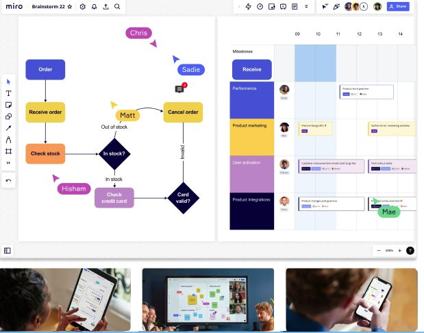
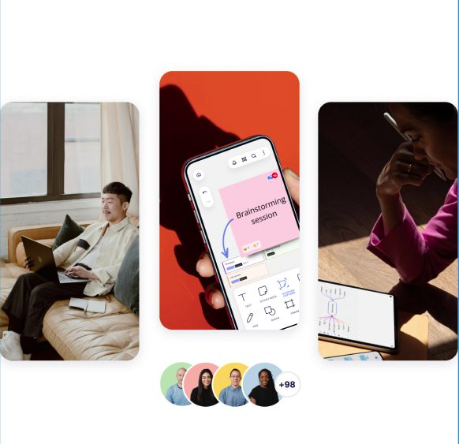
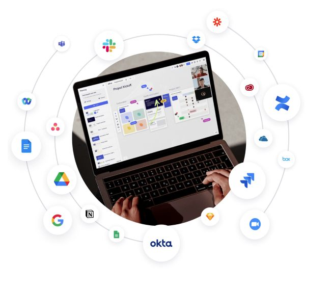

Место для командной работы
Интерактивная онлайн-доска для совместной работы команд — в любое время, в любом месте.
Начать бесплатно кредитка не нужна

Работайте вместе, где бы вы ни находились
Работая в офисе, удалённо или в гибридном формате, с Miro ваша команда может общаться, сотрудничать и совместно заниматься творчеством в одном пространстве, из любой точки мира.
Узнать больше


Работайте вместе, где бы вы ни находились
Редактируете ли вы документы в Google Docs, работаете над задачами в Jira или созваниваетесь в Zoom, Miro предлагает более 100 интеграций с уже известными и полюбившимися вам инструментами.
Узнать больше